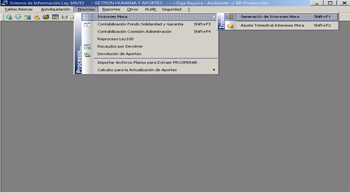
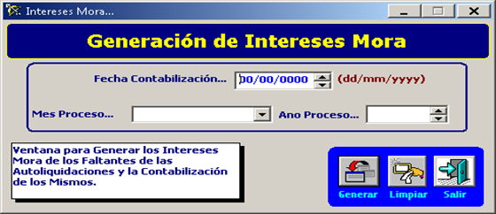
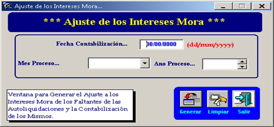
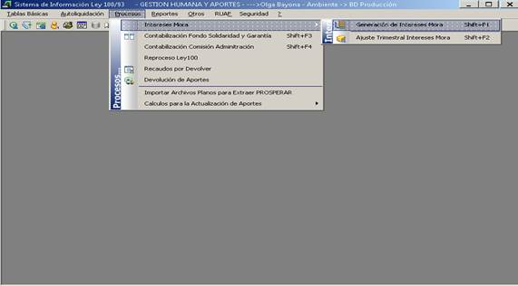

De este menú se despliegan los siguientes sub-menus.

Esta ventana sirve para generar los intereses de mora de los faltantes (cuentas de cobro) de autoliquidación de aportes de ley 100.
Este proceso normalmente es ejecutado cada mes para el cierre contable.

Genera el ajuste a los intereses de Mora de los faltante de las autoliquidaciones.
Sin embargo esta ventana en la actualidad no se encuentra en uso.

De este menú se despliegan los siguientes sub-menus:
